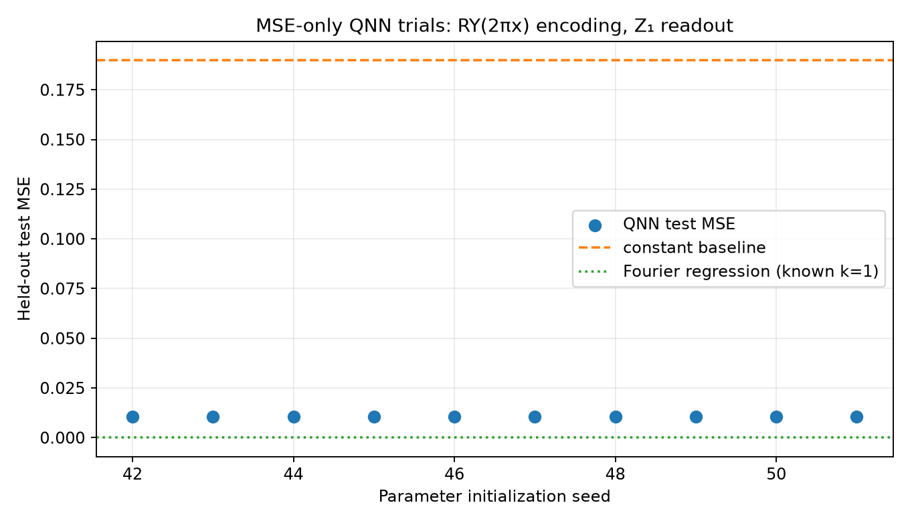

Objective: supervised MSE on (x,y) pairs only. No Frobenius/process-fidelity alignment or PINN residual is used in training.
Encoding: RY(2πx)|0⟩ on qubit 0, x∈[0,1), period 1. Readout: ideal Pauli-Z expectation on qubit 1.
Seeds: [42, 43, 44, 45, 46, 47, 48, 49, 50, 51]. Mean test MSE: 0.010387421; population SD: 1.494355e-10; peak-frequency accuracy: 1.000.

| Seed | Test MSE | Validation MSE | Peak frequency correct | Run |
|---|---|---|---|---|
| 42 | 0.010387422 | 0.010226287 | True | run report |
| 43 | 0.010387421 | 0.010226286 | True | run report |
| 44 | 0.010387422 | 0.010226287 | True | run report |
| 45 | 0.010387421 | 0.010226286 | True | run report |
| 46 | 0.010387421 | 0.010226287 | True | run report |
| 47 | 0.010387422 | 0.010226287 | True | run report |
| 48 | 0.010387421 | 0.010226287 | True | run report |
| 49 | 0.010387421 | 0.010226286 | True | run report |
| 50 | 0.010387422 | 0.010226287 | True | run report |
| 51 | 0.010387421 | 0.010226287 | True | run report |